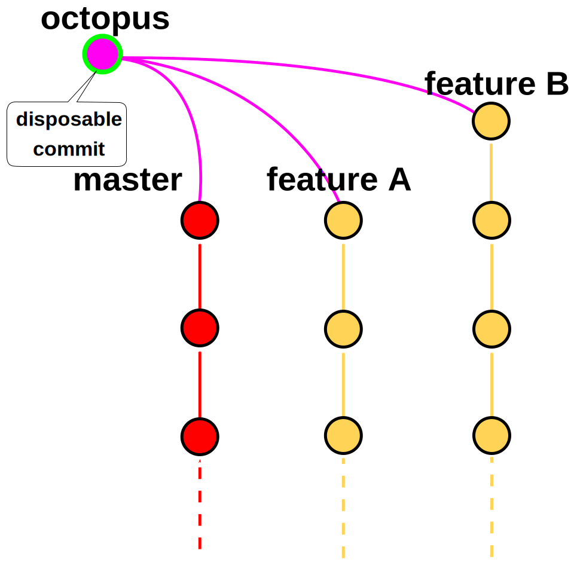
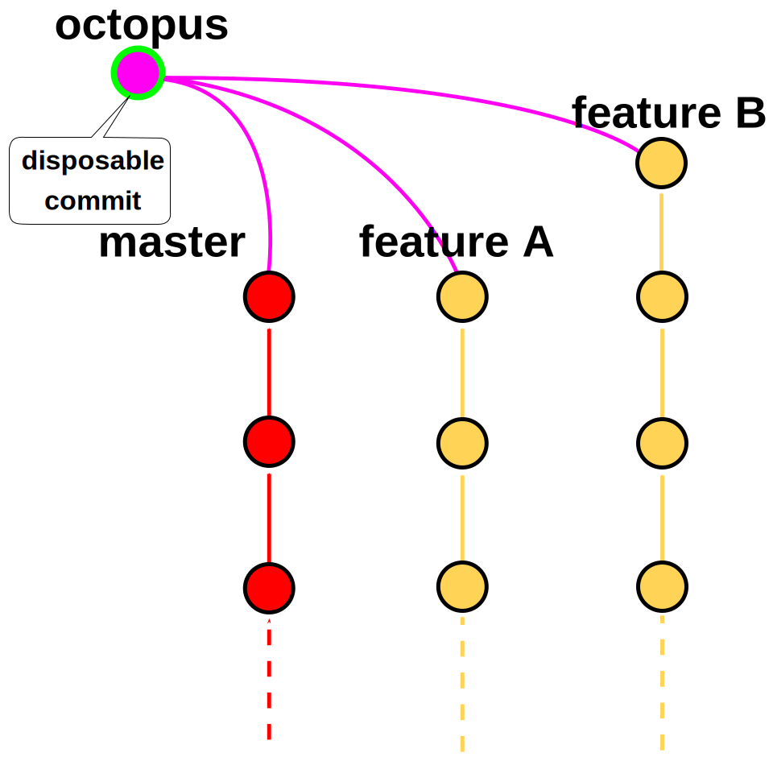

Continous delivery
Cycle de developpement
- Implémentation
- Intégration continue
- Tests
- Validation
- Livraison
- Mise en production
- Exploitation
Traiter les difficultés au plus tôt
Exploitation


Erreurs & logs
Un boulot à temps plein
Astreinte 24/7 par l'équipe
Reportings métier
Excel, emails, backoffice ...
Une nouvelle fonctionnalité = un tracker
le business devient ops !
Mise en production

Automatiser
"Infrastructure as code"
Packaging


Deploiement
Blue/green
- Environnement de production dupliqué
- Loadbalancer en entrée


Livraison
Modèle utilisé
- Trunk/branch
- Mainline based deployment
- Pull request
On livre ...
les développements complets
pas chaque commit

feature = nouvelle fonctionnalité, bugfix, changement de conf ..

Les branches finies, passent
Rien n'arrête la MEP
Conflits entre les branches


Besoin vital d'éviter les conflits
Validation
- Code review
- Showcase/validation fonctionnelle
Capacité de test naturelle de l'équipe
- Multi navigateurs
- Multi devices
Pull requests => isolement

Utilité de l'environnement dev
- Seleniums
- Suivit des logs
Intégration continue
A chaque commit
- Compilation
- Tests automatisés
- Merge des feature branches
Octopus

 

Octopus
- Construction de l'environnement de test (dev)
- Détection des conflits entre branches
- Assure la simplicité de la livraison
- Plug/unplug les branches facilement
Gestion des conflits
Annuler une modif devient simple
Gestion des conflits
2. Mettre le fichier dans le même état dans les deux branches
Recopie manuelle
Ou
cherry-pick

Gestion des conflits
3. Merge entre branches

On impose un ordre de livraison
Proof of concept

Implémentation
Qu'est ce qui change ?
Eviter les conflits
La facilité de merge témoigne de la santé du code
SOLID
Single responsibility principle
Feature toggle
Quand ?
- Beaucoup de conflits
- Feature instable
- Développement long
Passer un refactoring
Perturbations inévitables
- Directement dans le master
- Faire un point de synchronisation
Temps de build
- compilation + tests - 15 min -> 2 min
- Build packaging - 10 min -> 6min
- Seleniums - 50min -> 8 min
- Déploiement - 1h30 -> 6min